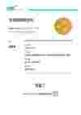

← 포트폴리오로 돌아가기
CERTIFICATE
COS 2급 자격증
자격종목
Coding Specialist 2급 / Intermediate (Scratch, 한글)
발급기관
YBM
합격일자
2025.09.23
자격번호
25_S2_2910420

이미지를 클릭하면 원본 크기로 볼 수 있습니다.
이 페이지는 포트폴리오에서 자격증을 클릭했을 때 확인할 수 있는 자격취득 정보 페이지입니다.